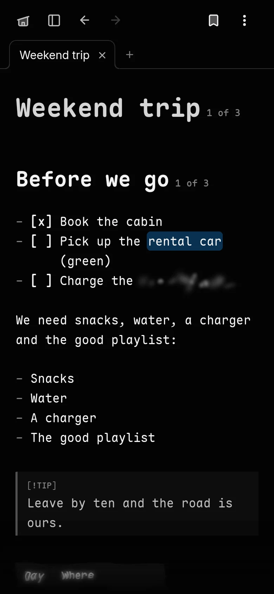
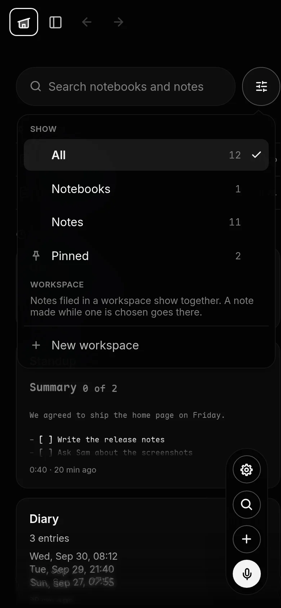

Notes for people who think out loud
Say it.
It lands as Markdown.
Talk, and your note takes shape while you speak: the headings, lists and to-dos in place, transcribed by models that run on your phone. Every note is one
plain .md file, and it is yours.
No account needed. Android, Mac, and any browser. iPhone and iPad are on the way.
You sayTitle: weekend trip
-
You talk
Tap Speak, or hold the side key. Words appear as they are heard, laid out as they will read.
-
It shapes itself
Say "heading", "bullet point" or "remember to", and the cue becomes the mark. The cue words are taken out.
-
It stays yours
One
.mdfile per note, on your phone, readable in any editor. Obsidian included.
Speak
Say the shape, not just the words.
Ghost.md listens for the way people already talk about notes. A title, a heading, a list said in one breath, a to-do you mean to remember. Two seconds of quiet is a new paragraph. The recording is kept as the note's tape.
Title: weekend trip
# Weekend tripHeading, the budget
## The budgetBullet point, the heating
- The heatingRemember to book the cabin
- [ ] Book the cabinNumber one, passports
1. PassportsWarning callout: bring cash
> [!WARNING]Calculate four hundred plus one hundred twenty
= 400 + 120Scratch that
Took back, with UndoActually, Tuesday
The last sentence, corrected

Hey Ghost
Name a note, and your words go into it.
Mid-recording, say "Hey Ghost, add a note to House TODOs". The recorder switches to that note, and each thing you say lands in its list, under the heading that shares its words, in the list's own style. Nothing is saved until Done, and then it opens with Undo.
Hey Ghost is heard inside a recording you started, and nowhere else. No microphone is left listening for it.
Hey Ghost, add a note to House TODOs
Adding to “House TODOs”
Call an electrician about the light sockets
# House TODOs
## Kitchen
- [ ] Fix the drawer runner
## Electrical
- [ ] Call an electrician about the light sockets
The AI, on your phone
A second listen, and a read-through. Nothing leaves the phone.
When you tap Done, a larger speech model listens to the tape again and a language model reads the note through. What it would change lands as marked changes: added words tinted, removed words struck through, each with Keep and Revert. Ask for Format, Summarize or Enhance any time, or say it into the note.
- Whisper base.en to hear you live, and small.en to listen again
- Qwen3.5 2B, 4B or 9B, or Gemma 4 E4B, chosen in Settings
- Each downloaded once when you ask, and checked byte for byte
What the review found
## Standup
We agreed to ship the thingthe home page on Friday.
- [ ] Write the release notes
- [ ] Ask Sam about the screen shotsscreenshots
Three changes to keep or revert. Try them.
Tapes and meetings
Record the meeting. Put the phone down.
Start a meeting and let the screen go off. When it ends, the phone transcribes it and writes it up in the background, while it charges or has half its battery, with a summary under the title: what was said, what was decided, and your to-dos as boxes. The audio stays on the phone.
Every spoken note keeps its recording as a tape at the top of the note, to play back, or to add to.
Plain Markdown, and the marks
Everything Markdown does, and a few things of its own.
Headings, lists, to-dos, tables, code, callouts, footnotes and links between notes are drawn as you type, the marks left dimmed. Then seven marks of Ghost.md's own and five effects that move, each written so the note still reads anywhere.
||spoiler||- highlight
==highlight== - an aside
%%aside%% - probably
??unsure?? - 4417
@@redact@@ - shout
^^shout^^ - added
++added++
- heat
🔥🔥heat🔥🔥 - frost
❄️❄️frost❄️❄️ - a wave
🌊🌊a wave🌊🌊 - shimmer
✨✨shimmer✨✨ - haunted
👻👻haunted👻👻
They hold still when your device asks for less motion.
Your notes, found
Pinned first, then where you were.
The home page opens on your pinned notes, the four you touched last as cards, and everything else by when. Search every word of every note, and filter to notebooks, notes, pinned, or a workspace, from one button beside the search.
- Swipe right to pin, left to archive, and further left to delete, each step felt as a click
- Pull down to sync and read your notes again
- Nine layouts to choose from: cards, rows, a shelf, a library, a timeline, and mixes of them


More than notes
Journals, boards and canvases, still Markdown.
-

Notebooks and journals
Gather notes into a notebook with an index, and read it straight through. A journal starts each entry dated, from a template, and can keep where it was written.
-

Boards
A list can be a board with cards you drag between columns. The board is a few lines of Markdown, and the items stay in the note.
-

Canvases
Cards on a page with lines between them, saved as JSON Canvas, and framed inside any note.
Private by design
Your words stay yours.
-
No account needed
Without one, nothing of yours is on a server at all.
-
Sealed before it leaves
With sync on, notes, recordings and pictures are sealed with AES-256-GCM on the device. The server never sees a word.
-
Models on the device
The apps transcribe and think on your phone or your Mac. No cloud AI.
-
Nothing listening
The microphone is on only while you record. No analytics, no crash reports, no ads.
-
Shared with a key
A read-only link carries its key after the #, which a browser never sends to a server.
-
Gone when you say
Delete your account in the app or on the web, and everything it kept goes with it.
Wherever you are
Your phone, your Mac, any browser.

-
Android
Hold the side key to record, even from the lock screen, once Ghost.md is your digital assistant. On a Fold, the note unfolds with the hinge.
-
Mac
The same models run on the Mac, macOS 13.1 or later. ⌘K opens the palette, and your notes are files in Finder.
-
The web
The same editor in any browser, with the browser's own speech recognition. No install.
-
Your tools
Send list items to Notion or GitHub, and let Claude read and write your notes through its connector. It never deletes.
Make it yours
Six pages to write on. Try one here.
The app's own themes. Pick one and this site wears it too.
And two fonts, a text size, spacing, corners and code colours in Settings.
Get Ghost.md
Straight from here, today. The stores are on their way.
The Mac app is signed but not yet notarised: the first time, right-click it and choose Open.
Questions
Does my voice go anywhere?
Not in the apps: Android and the Mac transcribe on the device, and the language model runs there too. The web version uses your browser's own speech recognition, and Chrome's sends your voice to Google.
Do I need an account?
No. An account is for syncing between your devices, and everything it syncs is sealed on the device first. You get eight recovery codes, once; nobody can reset a lost password, us included.
Can I open my notes in other apps?
Yes. Each note is a Markdown file named after its first line, readable in any editor and in Obsidian. The marks Ghost.md adds are written so they still read as text anywhere.
What about iPhone and iPad?
The iOS app is on its way; voice notes need to work there first. Until then, the web version runs in Safari.
Which languages does it hear?
English, for now. Every engine listens for English.
How do I learn the marks?
The Academy teaches them one at a time, in thirteen short lessons, and the Guide is in the app as a notebook of its own.